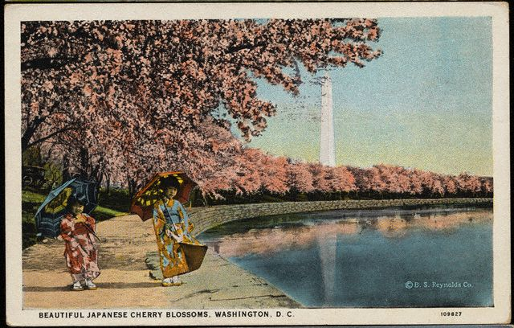

Nov. 21st - 23rd Washington, DC --
After a few days out of the car all were ready to climb back in. The
sun was brilliant and the air clear and surprisingly warm as we
continued along West Virginia's glass-smooth mountain
highways, slicing through massive granite cliffs like a hot knife
through buttah. The countryside morphed into Virginia's exurbs and
suburbs. In no time we're navigating the mad web of highways and
parkways
that girdle DC. Here, exits are so rapid-fire that the GPS can't keep
up. Cleverly, we
arrived at rush hour, when lanes of opposing traffic on the road we're
driving all run one way--a ducky thing for combating congestion. But
there are no
clues to tip off the casual visitor. (Oh, say--a SIGN.) Other drivers are taking over lanes
that would
ordinarily position them perfectly for head-on crashes. It's a
trend: we decide it's unlikely
we're about to witness mass automotive
suicide. Choosing to think of it as driving in Great
Britain without coughing up that pesky plane fare, and feeling
ever so international, we complete our
unscheduled-but-entertaining tour of the Rock Creek Parkway and make a
little victory loop through the city and back to the edge of Georgetown.
Our hotel was a new one, built in an old, low brick factory that had
once been a paper plant. As a kid, Eric lived briefly across the
Potomac in
Alexandria. He remembers an industrial building in this
neighborhood with a sign on it proclaiming that the horrific odors
emanating from the area weren't created within its walls. Rightly, back then, our
new
home-away-from-home should have taken the blame. (Don't you wish they'd
had a sign copping to it all? Maybe even a marquee with
changing messages. "Sorry for the stink," or "Oops! Sorry. That was
us.") You'd never know its odiferous origins now. The only smell is
that of a crackling wood fire in the lobby. Extremely
efficient folks in snappy black outfits meet us, coo and fuss over
Rufus and sweep us up to our room, which after all the frou of The
Greenbrier, feels modern, restful and simple. Unpacking
what we needed for these few days we began itching for our NY digs,
where we'd be able to unpack everything and settle in for a
while.
We called Eileen, pal supreme and a person who makes me laugh more than
just about anyone. Eileen works for The Associated Press' radio
network: some days she edits, some days she writes. If ever your radio
spills the words, "Eileen Fleming, Associated Press" that would be
herself. Please note: the above use of the words "days" is generous.
Such is the nature of the news biz that Eileen frequently works evening
and
overnight shifts, as well as days. And so, she enjoys a
perpetual state of jet lag without the trouble of crossing time zones.
This would slay a lesser soul, but she's a tough one. Happily, she's on
days while we're in DC and available for evening play. Eileen takes us
around the corner to Nathans for dinner, a perfect choice. It's an old
joint,
sensibly divided: bar in the front, eats in the back. The restaurant
side is cozy, with a center aisle like a shotgun shack and tables that
sit way too close together lining both walls. (I sincerely hope things
work out for the bumpy love lives of the women sitting to my left. And
though I didn't butt in to say so, I think he's a jerk for making Mary
wait, too.) We tuck into steaks and fried oysters and knock back a bit
of wine. Eileen tells us on past visits here she's witnessed some great
scenes between older men and younger not-their-wives dollies;
arguments with lines like "but I want you take me out--I don't want to
stay in the apartment all the time!" It's a Thursday, so the joint
isn't at such a
fevered pitch. One guy does walk in with a jacket held up, obscuring
the side of his face. We all take discreet peeks but don't recognize
him. The plastic surgery must have worked.
The following day the unseasonably warm weather continues. We bravely
take to the roads again to drop in on the
neighborhood where Eric lived as an 8-year-old. Besides, Ru needs some
outdoor romping
time, and we're told there's a good park there, too--allegedly, with an
off-leash dog area. We tromp for ages through the park but never find
frolicking dogs. We do, however, stumble across Civil War cannons,
plaques commemorating assorted skirmishes and a radio freak who has set
up some sort of broadcasting facility at a picnic table. Picture, if
you will, the comic book store owner from The Simpsons--wired for sound
and broadcasting. On our way back to DC, we manage to find Eric's old
apartment. The tree out front is bigger and the brick has been painted,
but little else has changed. There are still strip malls down the
street, though these are bigger, too. And people have put up
fences--the open spaces Eric remembers between buildings are no longer
places where kids could easily find playmates.
Back in the city, we meet up with Eileen for a tour of The AP and an
evening hanging out with her DC pals, folks we're excited to meet. The
AP is in a nondescript high-rise in the heart of downtown. The building
houses a bunch of offices and news agencies, including Al-Jazeera.
(Rumor has it the building's management is encouraging them to move on
in that way dissatisfied landlords have.) There's lots of signing-in
and security at the elevators and then we're in. Those who haven't
worked in news often carry a movie image of newsrooms, one that
includes lots of chaos and shouting. Those moments are few and far
between. This room is like other newsrooms I've worked in: quiet, with
lots of folks tapping intently on their keyboards. The center of the
room is filled with metal desks, its edges lined with studios where
sound is recorded, cut and broadcast. The story of the hour is Michael
Jackson, who has just turned himself in to the Santa Barbara police.
Most seem to agree that his mug shot looks a lot like Joan Crawford on
a bad day and already people are expressing concern about the number of
times they'll see that picture. (Hey--don't blame these guys: they're
in radio.)
We run a gauntlet of introductions: Myra met us in the lobby with
Eileen. Leading indicators are excellent--in just a few minutes we can
tell she's as lovely, smart and funny as promised. Fritz
doesn't have a chance to dazzle us with his wit and charm until he's
sprung from work a couple of hours later--right now he's wrestling with
a story on a new French drug that's knocking on Viagra's door. But he
comes through admirably on the smarts and fun front later on in the
evening. Indeed, Saager is handsome and does have great eyelashes. "Wee
Brian" isn't all that wee and
seems to be a fine fellow, too.
I think most would agree: there are few better ways to get to know
people than sitting down to share a few pots of hot, bubbling cheese. We're at The Melting Pot, which
Eileen keeps calling the Magic Pan, for its ubiquitous chainness. It's a festival of trust--what with
those long pointy forks that so easily convert to weapons and the
unspoken, sacred contact: "no double dipping." There's the difficult
consensus exercise of which cheeses to choose. Hell, one wrong word,
and the cheese itself could be slung in a permanently scarring way. But
with the right group of people and enough wine, it's as much fun as
you'll have eating out. We score on both counts. At dinner, there's
much discussion of insane politics of the day. This is a group that
hears the administration's line more often than most reporters, which
translates into patter filled with Bushy sound bites, served as a goof.
This construction is frequent: x hates freedom. (Fill in the variable
with almost anything for a giggle. Rufus hates freedom, my chair hates
freedom.) At this meal, it was inevitable that cheese hated freedom.
It's just a few steps away from "Hell-o-o, Guantanamo!" and "Then the
terrorists win." By the end of the weekend, we were slinging these
phrases, too.
Saturday brought more insanely lovely weather, a trip to the lovely
Zayda's not-so-lovely neighborhood, a lunch and stroll with her along
the Potomac, and very tasty pizza with Eileen and Christian in the
evening. Sunday allowed for more Zayda time. (She had requested brunch
with live music; we found a good one at the Fairmont.) In the evening,
we hung out at Eileen's with Christian, Myra, and Lauren--yet another
of the set of smart, charming reporter friends. Heading back to the
hotel, we were anticipating the pleasure of packing one more time and
then unpacking for good for a couple of months.
STATS
Miles traveled to date: 3800
What hates freedom?: your call. But it's not Rufus. Rufus would not do
well at Guantanamo.
Snoozed at: The
Ritz Carlton Georgetown